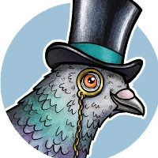

Vojtěch Špaček
Senior C++ engineer — safety-critical embedded & HIL test automation | Linux/networking | agentic-AI (MCP) tooling
Pragmatic programmer and creative problem solver — systems, verification and open source.
sparesparrow@protonmail.ch | +420 776 168 749 | GitHub | LinkedIn | X | Calendly | Signal | YouTube | Discord | Website
Profile Summary
Senior C++ engineer working on safety-critical and real-time systems: aircraft onboard diagnostics at Honeywell, electron-microscopy detector software at Thermo Fisher Scientific, and a Linux inspection proxy and firewall at Trusted Network Solutions.
Most recently sole owner of the hardware-in-the-loop verification suite and automated bench for a safety-certified two-stage gas furnace ignition controller (UL/CSA, ANSI Z21.20, NFPA 54), raising measured conformance to 259 of 271 tracked state transitions (95.6%).
Linux, networking and security specialist — Netlink, nftables, TLS inspection, Kerberos/LDAP/OCSP — with C++20 daemons shipped as Debian packages and a Rust reimplementation published on crates.io.
Builds agentic-AI tooling on the Model Context Protocol: an agent harness adopted into a daily client delivery workflow, and MCP-Prompts, published to npm, Docker Hub and the MCP directories (Glama, MCP Market, PulseMCP) with 97 stars and 21 forks.
Preferred Roles
-
Test Automation / Verification Engineer (HIL, safety-critical)
Hardware-in-the-loop benches, requirement traceability, instrument control and test evidence reporting. -
Senior C++ Engineer — embedded, RTOS and real-time systems
State-machine engines, hardware abstraction layers, inter-process communication, high availability. -
Linux Systems, Networking and Security Engineer
TCP/IP, Netlink, nftables, encrypted traffic inspection, daemon design and packaging. -
AI/LLM Integration Engineer — MCP servers and agentic tooling
Model Context Protocol servers, prompt and agent workflow design, LLM provider APIs, CI/CD for AI-assisted delivery.
Work Experience
Test Automation Engineer (Python, C#)
Hardware-in-the-loop verification of a safety-certified two-stage gas furnace ignition controller (UL/CSA, ANSI Z21.20, NFPA 54), as sole owner of the verification test suite and of the automated bench that drives it. Owned delivery end to end: requirement traceability, issue tracking, branch and pull-request workflow, Conan packaging, CI integration and monthly client reporting.
- Designed an Arrange/Act/Assert validation pipeline in Python with eight independent gates covering preconditions, stimulus timing, state sequence, alarms, signal history, cross-layer consistency, timer accuracy and requirement traceability.
- Built a data-driven generator expanding a YAML catalogue of 270+ state transitions, 38 states and 33 events into roughly 290 executable tests, removing hand-written duplication.
- Engineered the bench device layer so each instrument is owned by a single thread against a shared monotonic clock, covering a pyvisa/USBTMC/SCPI programmable AC source, CAN serial-bus monitoring and Modbus relay and probe I/O.
- Implemented a correlated JSONL timeline placing every instrument command, signal edge and bus message on one axis, enabling root-cause analysis across three independent devices.
- Diagnosed and fixed a leaked USB handle that had been misreported as a hardware fault for months, restoring an entire blocked test family.
- Raised measured conformance to 259 of 271 tracked transitions (95.6%) and closed a ~148-case gap in which stimulus windows were never actually measured, bringing it to zero.
- Delivered an unattended nightly bench pipeline with per-key locking, crash and abort recovery, result journalling, Excel evidence workbooks, bilingual HTML dashboards and Mermaid failure graphs, cutting report generation from 15.7 s to 1.6 s.
- Investigated 25+ firmware and harness defects against the C/C++ firmware sources, shipping a standalone reproduction script for each.
- Migrated a C#/.NET WinForms serial-bus monitor into version control, fixed a log-parser crash and reduced its build and deployment to one command.
- Created an agentic AI harness of specialised agents, skills, prompt workflows, policy hooks and Model Context Protocol servers, adopted as a daily part of the delivery workflow.
New skills learned
Hardware-in-the-Loop Test Design, Safety-Certified Product Verification (UL/CSA, ANSI Z21.20, NFPA 54), Ignition State-Machine Domain Knowledge, pyvisa / USBTMC / SCPI Instrument Control, Modbus I/O Cards, CAN Serial-Bus Diagnostics, Deterministic Multi-Threaded Device Ownership, Test-Evidence & Traceability Reporting (openpyxl, HTML dashboards, Mermaid), Model Context Protocol Server Development, Agentic Workflow Design & Governance
Software Developer (C++)
Electron microscopy software for high-resolution detector hardware operation and image acquisition. Built server-side C++ applications, FPGA-based data processing pipelines with gRPC networking, and backend logic for a C#/.NET WPF image processing and display application. Worked in an international Agile team with bi-weekly stakeholder demos.
- Implemented server-side software in C++, including hardware abstraction layers (HAL) and inter-process communication (IPC) using COM and MIDL on Windows.
- Developed embedded software for FPGA hardware, using gRPC network communication in C++, Python and Linux environments.
- Contributed to WPF application development on the backend using C# and COM/MIDL IPC with the HAL, and ensured graceful degradation of the application.
- Optimized the data acquisition pipeline and implemented robust error handling.
- Developed vscode-automation, an enterprise-grade VSCode extension integrating TICS code quality analysis with the OpenAI API for automated violation detection and AI-powered remediation, using TypeScript, the VSCode Extension API and Git API integration.
- Led 3 knowledge sharing sessions on GitHub Copilot best practices and presented bi-weekly stakeholder demos, including the final presentation of the vscode-automation innovation sprint.
New skills learned
Image Acquisition & Processing, C#, .NET, Component Object Model, Software Development for Windows, gRPC, FPGA development, VSCode Extension Development, TypeScript, OpenAI API Integration, Technical Presentation & Stakeholder Communication
Software Engineer II
Onboard Maintenance System that monitors the condition of aircraft and diagnoses issues during flight. Architected and implemented the DiagTest framework, a state machine-based diagnostic test engine in C++ managing 15+ operational states for aircraft member system testing during flight and maintenance operations.
- Designed a job-based execution system with DiagTestJob and DiagTestMsgQueProc for asynchronous test orchestration, implementing message queue processing patterns for reliable real-time diagnostics.
- Engineered a test interference management system preventing conflicting diagnostic tests from running simultaneously, ensuring aircraft system safety and data integrity.
- Implemented four diagnostic test modes (data collection, passive monitoring, interactive, non-interactive) with timeout management, precondition handling and aviation-standard command/response protocols.
- Developed comprehensive integration tests in Python to validate communication protocols, state transitions and system stability under various failure scenarios.
- Built a real-time parameter monitoring system (MonitorManager) tracking aircraft system values during test execution with maintenance message correlation.
- Optimized data stream processing with multi-threading and timeout management, and ensured aviation safety standards compliance.
New skills learned
Embedded Software, ARM, RTOS, Clang, Cross-platform Compilation, Flatbuffers (binary data serialization, C++ headers generation), Conan (dependency management), Enterprise Architect (UML diagrams), Aviation Safety Standards, State Machine Design Patterns, TeamCity, GitLab CI/CD
Application Developer
Kernun Adaptive Firewall. Implemented a forward proxy in C++ on Linux featuring HTTP/HTTPS proxying with TLS/SSL inspection, OCSP integration for certificate validation, Kerberos authentication and LDAP user/group lookup, plus the ipmon network monitoring daemon driving nftables firewall rules from real-time IPv4/IPv6 address changes.
- Built comprehensive proxy infrastructure with certificate generation and management (CA, client certificates), a dynamic configuration builder/parser system, and a manager/partition architecture for modular daemon design.
- Integrated security components including Suricata (intrusion detection) and nftables (static firewall), aggregating logs and managing connection information in PostgreSQL.
- Developed DNS resolution and caching mechanisms, domain categorization and client authentication methods.
- Implemented real-time network interface monitoring in ipmon using NETLINK sockets, handling both IPv4 and IPv6 address management, with Unix domain sockets for IPC and dynamic nftables rule management.
- Implemented thread-safe, event-driven networking using modern C++ (mutexes, RAII, atomic file operations) with JSON-based configuration management and configurable delay mechanisms.
- Developed reporter_log, a C++ replacement of a Perl command, with PostgreSQL integration, structured log parsing and processing, Perl interoperability for legacy compatibility and database schema management.
- Built a configuration generation system in TypeScript/JavaScript with YAML-based high-level configuration processing, certificate generation automation and integration with the web backend for dynamic proxy configuration.
- Developed comprehensive testing infrastructure with a Perl test framework covering HTTP/HTTPS protocol testing, TLS/SSL inspection, Kerberos/LDAP authentication and OCSP validation.
New skills learned
TCP Proxy, HTTP Proxy, Encrypted Traffic Inspection, TLS 1.3, C++20, C++17, Boost Libraries, JSON-CPP, Kerberos/Heimdal, OCSP, LDAP, SQLite, Perl, JavaScript/TypeScript, YAML, Jenkins, Linux Networking, Netlink, UNIX Sockets, SSH Tunneling, Port Forwarding, VirtualBox, GDB
Independent IT Contractor
Independent contracting for business and consumer clients: CI/CD automation pipelines and Linux server administration for B2B customers, and IT support, consumer hardware retail and security consulting for B2C customers.
- B2B: CI/CD automation pipelines and Linux server administration.
- B2C: IT support freelancing, consumer hardware retail and security consulting.
New skills learned
Kali Linux, Wireshark, TeamCity, Docker, Self-studied the Certified Ethical Hacker syllabus (exam not taken)
Automation Developer & IT Systems Specialist
Enterprise IT operations: infrastructure monitoring, incident management and an automation solution that replaced manual ticketing and server administration work.
- Developed an automation application that replaced manual workload in ticketing operations and basic server administration, using Bash, PowerShell and JavaScript for cross-platform server management and applying automata theory to design state-driven workflows.
- Monitored Unix/Windows servers and resolved production incidents, working hands-on with Active Directory and VMware virtualization.
New skills learned
RedHat Linux, Windows Server, Active Directory, VMware, Bash, PowerShell, JavaScript, Practical usage of automata theory
Skills
Embedded & RTOS
Verification & HIL
Networking & Security
AI / LLM / MCP
Tooling
Open Source & Projects
MCP-Prompts Featured
Model Context Protocol server for managing prompt templates and LLM interactions, with four core MCP implementations (filesystem operations, memory management, AWS integration and generic MCP configurations). Implemented a hexagonal architecture and integration tests; ships Docker images across multiple server types, AWS deployment examples (S3, Lambda, DynamoDB, CloudWatch, IAM, ECR), vector-based semantic search with pgvector and real-time collaboration over Server-Sent Events. Published to npm and Docker Hub and listed across the MCP server directories.
- TypeScript
- Node.js
- PostgreSQL + pgvector
- Docker
- REST + SSE
- AWS
GitHub · npm · Docker Hub · Merged PRs · Glama.ai · Glama (Fly.dev) · MCP Market · MagicSlides · MCPHub · Skywork · PulseMCP · AIBASE
rust-network-mgr Featured
Redesign and reimplementation of ipmon as a Rust daemon orchestrating dynamic firewall rules via Netlink with a minimal memory footprint. Event-driven architecture for real-time network state changes, with atomic firewall updates that prevent race conditions and inconsistent rulesets during topology changes, lock-free data structures and epoll-based multiplexing for high-throughput event processing.
- Rust
- Netlink
- nftables
- epoll
- Lock-free data structures
rtp-midi Featured
Modular Rust architecture for real-time MIDI, audio and LED control. Low-latency MIDI routing connects music production hardware to DAWs and addressable LED systems over network protocols. Includes an Android hub (Kotlin + Rust NDK) with a foreground service, AMidi NDK and mDNS discovery, plus an ESP32 visualizer using FastLED and dual-core FreeRTOS, in a dual-protocol design: RTP-MIDI for DAWs, OSC for LED devices.
- Rust (66.5%)
- RTP-MIDI
- OSC
- Android NDK (Kotlin)
- ESP32 / FreeRTOS
- Docker
ipmon
Netlink socket monitoring daemon that detects real-time IPv4/IPv6 address changes and updates nftables firewall rules accordingly. Built with modern C++20 using RAII, move semantics, thread-safe and atomic operations, an event-driven architecture, Unix domain sockets for IPC and JSON configuration management. Packaged for Debian-based systems with complete systemd hardening profiles for production deployment.
- C++20
- Linux kernel / NETLINK
- nftables
- Multi-threading
- systemd
- Debian packaging
mcp-project-orchestrator
Template orchestration with pattern recognition and code generation. JSON-driven orchestration analyses user input to identify design patterns and create initial project files from templates, with project/component template management, variable substitution, prompt template rendering and Mermaid diagram generation (flowcharts, sequence and class diagrams) rendered to SVG/PNG.
- TypeScript
- LLM integration
- Pattern matching
- Vector search
- Mermaid
podman-desktop-extension-mcp
Podman Desktop extension for secure MCP server management in containerized environments, combining multiple agent containers for collaboration and routing between them. Supports rootless runtimes, encrypted credential storage and real-time health monitoring.
- TypeScript
- Svelte
- Podman
- Container security
mcp-router
Workflow orchestration system for Model Context Protocol services, with a drag-and-drop visual designer for building AI pipelines, dynamic service discovery and resilient routing for fault-tolerant workflows.
- TypeScript
- Node.js
- React
- Docker
- Microservices
mcp-servers
A suite of Model Context Protocol servers: mermaid (diagram generator), solid (SOLID code review), prompt-manager (prompt orchestration and templates) and more, with visualization, persistence and prompt management tools.
- TypeScript
- Node.js
- Docker
- LLM integration
- Microservices
hard-coder
Early adoption of agentic design patterns and multi-step reasoning in AI code generation: a reasoning-engine assistant with explicit reasoning and planning capability, designed when LLMs lacked advanced reasoning without agentic frameworks. Transforms ideas into working code including tests and documentation. Evolution path: OpenAI GPT Store → Anthropic migration → CrewAI refactoring → Cursor IDE Composer Notepad.
- Python
- AI agent framework
- Reasoning engine
- Code generation
github-events
Python service monitoring 23+ GitHub event types with analytics: repository health scoring, developer productivity analysis and security anomaly detection. FastAPI REST API with 15+ endpoints, an interactive dashboard with live data, MCP server support and dual backends (SQLite and AWS DynamoDB) with ecosystem monitoring for cross-domain cooperation.
- Python
- FastAPI
- SQLite + DynamoDB
- MCP server
- Analytics dashboard
human-action
Audiobook generation pipeline built on the ElevenLabs Python SDK, producing a Czech TTS narration of Ludwig von Mises' Human Action. Processes dense academic text into high-quality audio narration while maintaining natural intonation and pronunciation.
- Python
- FastAPI
- ElevenLabs API
- Voice synthesis
- Multilingual processing
sparetools
Monorepo aggregating shared Python tools and Conan recipes, demonstrating C/C++ dependency management, modern Python packaging and cross-platform CI/CD.
- Python
- C/C++
- Conan
- Cross-platform CI/CD
cursor-rules
Rules engine for the Cursor IDE that structures AI interactions, using glob-based file matching and hierarchical organization for consistent workflows.
- Markdown
- MDC format
- LLM integration
- Pattern matching
cursor-audio-notifications
Cursor IDE extension adding audio notifications for events such as build completion, improving workflow awareness and reducing context switching.
- TypeScript
- ElevenLabs audio synthesis
- IDE integration
openssl-crypto-policies-test
Test suite validating OpenSSL cryptographic policy enforcement, with automated TLS security level verification and cipher benchmarking.
- Bash
- OpenSSL
- Cryptography
btc-pay-server
Self-hosted Bitcoin payment processor in Rust, offering a REST API for handling payments, generating payment requests and verifying transactions for easy integration into web applications.
- Rust
- Bitcoin protocol
- REST API
Education & Training
Masaryk University, Faculty of Informatics
Computer Science
Coursework only — no academic title
Coursework in programming, Linux and networking.
Coursera.org / DeepLearning.AI
Machine learning and LLM engineering
Coursework only — no academic title
Deep Learning Specialization (four machine learning courses by Andrew Ng), plus data analysis, prompt engineering and building LLM agents.
Self-directed study
Design patterns, software architecture and offensive security
Coursework only — no academic title
Design Patterns (refactoring.guru) and Hack The Box cybersecurity training; self-studied the Certified Ethical Hacker syllabus (exam not taken).
refactoring.guru · Hack The Box
Professional development reading
Software engineering practice
Coursework only — no academic title
Software Engineering at Google, The Pragmatic Programmer, Clean Architecture.
Software Engineering at Google · The Pragmatic Programmer · Clean Architecture
Languages
- Czech — native
- Slovak — native
- English — C1
- German — A1
Availability & Work Authorization
Available as an independent contractor (Czech IČO). Brno on-site and remote.
Trading on a Czech IČO
EU citizen (Czech Republic) — no permit required in the EU/EEA.
Interests
- Ludwig von Mises, Murray Rothbard
- Ray Kurzweil, Nick Bostrom, Max Tegmark
- Lex Fridman, Andrew Huberman, Dario Amodei
- Neuroscience & Brain-Machine Interfaces
- Music production, and producing a Czech audiobook — a TTS narration of Mises' Human Action